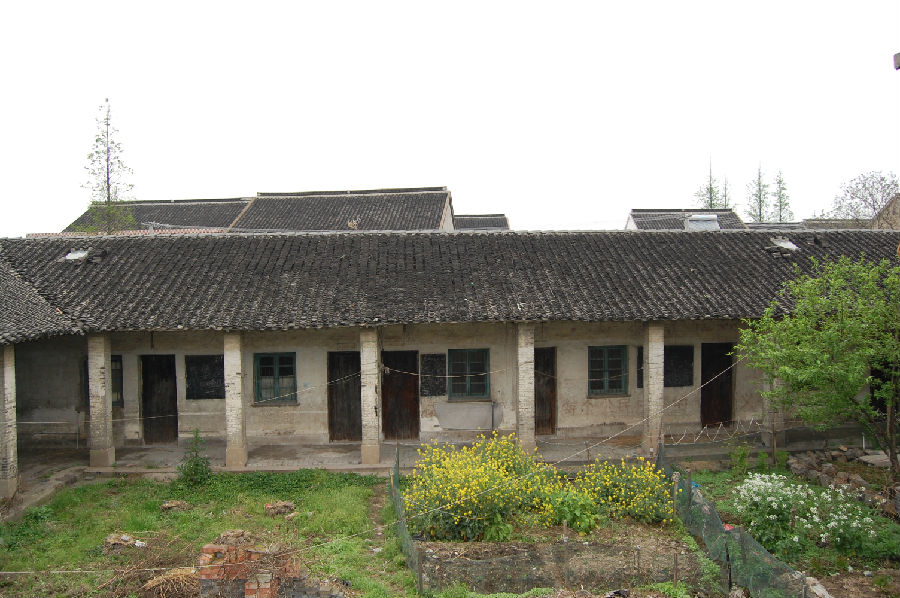

嘉兴市文物保护网 · 市级文物保护点 · 2020-11-06 · 原文

小曲村小学校舍位于嘉兴市秀洲区王江泾镇华联行政村7组属原小曲自然村，为一所20世纪50年代建造的不完全小学，只招收小学一到三年级学生。现存北侧、西侧教室各一间，整体呈“L”形分布，南面有一个小操场，东、南边有围墙环绕，建筑占地面积约800平方米，为水泥青砖建筑。作为新中国成立之初建造的村办小学，虽然建筑本身的价值不高，但其带有的历史痕迹，能够反映一个时代的历史和文化信息，因而具有较高的历史价值。2009年公布为嘉兴市文物保护点。